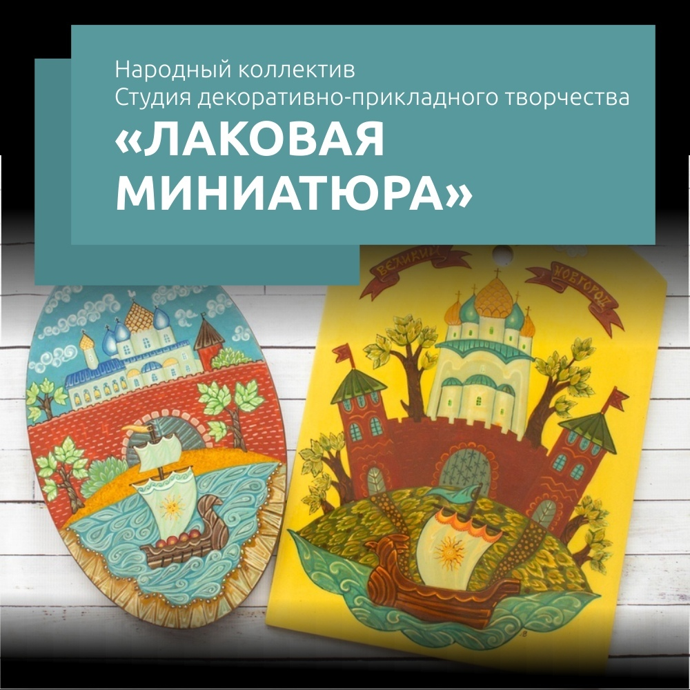
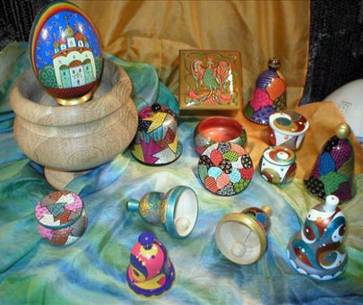
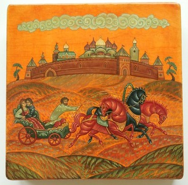
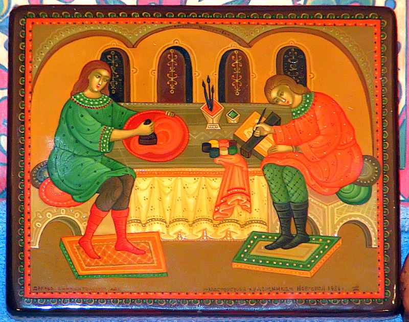
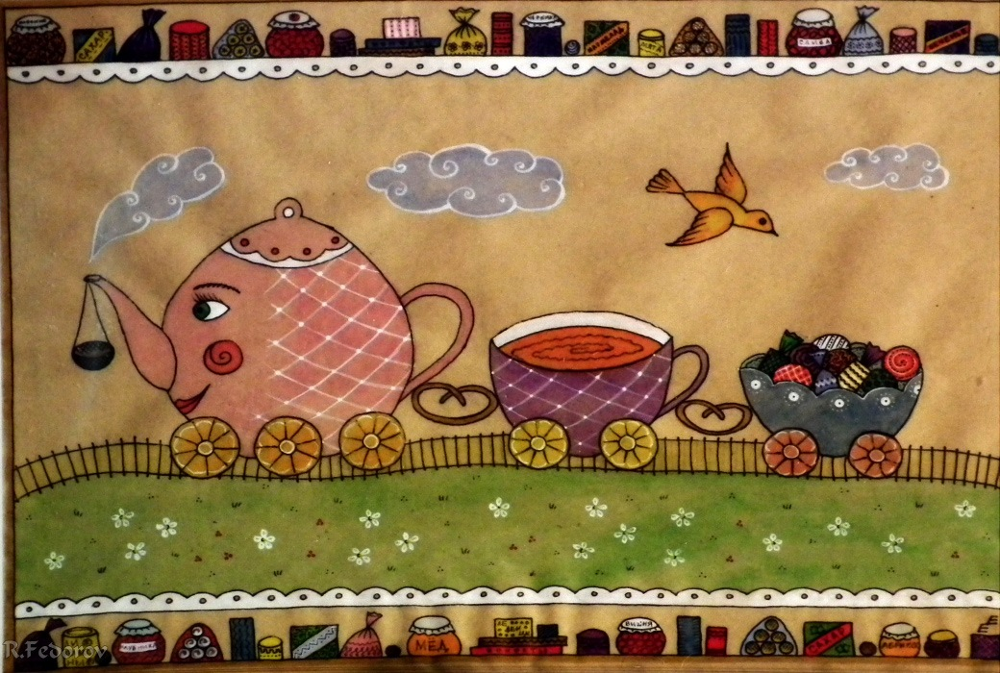
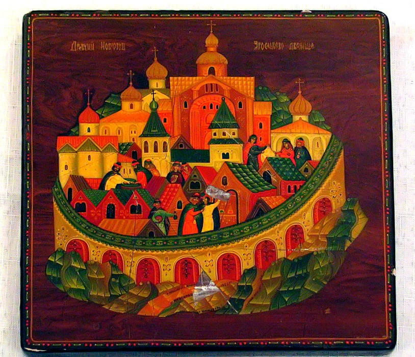

Главная → Студия декоративно-прикладного творчества «Лаковая миниатюра»

Таланты руководителя направлены на возрождение, сохранение и развитие большого пласта ремесленной культуры русской земли в области декоративно-прикладного искусства и народных ремёсел, на изучение и передачу подрастающему поколению всего богатства традиционных ремёсел Новгородчины.
Татьяна Александровна является создателем уникальной программы развития декоративно-прикладной студии, где одновременно занимаются студийцы разных возрастных групп (от 5 до 90 лет).
Удивительная атмосфера царит в студии - когда вместе трудятся и творят родители и дети, бабушки и внуки, а потом уже выросшие выпускники приводят в студию своих детей. Они вместе участвуют в праздниках творчества и выставках, приносят на занятия свои работы, делятся достижениями и проблемами, обсуждают творческие планы. Детям интересно наблюдать, как работают старшие участники студии, они видят перспективу, а у старших есть возможность попробовать свои педагогические способности, помогая младшим.
Все Ваши работы, даже учебные, всегда превращаются в готовое произведение, которое можно поставить дома на видном месте, подарить или показать на выставке.
Если же у Вас нет возможности посещать студию постоянно - для Вас наши разнообразные мастер-классы!
В студии декоративно-прикладного творчества Вас ждут:
• рисунок, композиция, цветоведение, основы кистевого приема как основа для создания всех ваших дальнейших шедевров в течение нескольких первых занятий;
Татьяна Александровна является создателем уникальной программы развития декоративно-прикладной студии, где одновременно занимаются студийцы разных возрастных групп (от 5 до 90 лет).
Удивительная атмосфера царит в студии - когда вместе трудятся и творят родители и дети, бабушки и внуки, а потом уже выросшие выпускники приводят в студию своих детей. Они вместе участвуют в праздниках творчества и выставках, приносят на занятия свои работы, делятся достижениями и проблемами, обсуждают творческие планы. Детям интересно наблюдать, как работают старшие участники студии, они видят перспективу, а у старших есть возможность попробовать свои педагогические способности, помогая младшим.
Все Ваши работы, даже учебные, всегда превращаются в готовое произведение, которое можно поставить дома на видном месте, подарить или показать на выставке.
Если же у Вас нет возможности посещать студию постоянно - для Вас наши разнообразные мастер-классы!
В студии декоративно-прикладного творчества Вас ждут:
• рисунок, композиция, цветоведение, основы кистевого приема как основа для создания всех ваших дальнейших шедевров в течение нескольких первых занятий;
• свобода выбора, в каком направлении будет интереснее двигаться;
• навыки в росписи любых изделий (деревянные изделия, мебель, посуда,
•бутылки, ткани и т.д.) в какой-либо из техник русских народных росписей (мезень, городец, северодвинские росписи, русский рисованный лубок, лоскутная роспись и др.);
• изучение современных техник: точечная роспись, декупаж, коллаж, аппликации, роспись по ткани, стеклу и фарфору;
• участие в традиционных ярмарках ремесел, фестивалях, конкурсах.
Руководитель - Татьяна Александровна Шангурова




